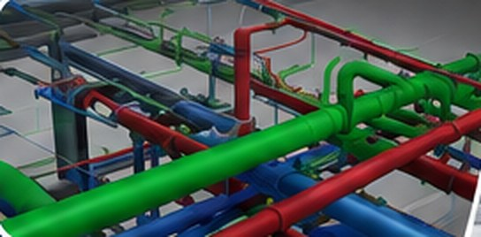
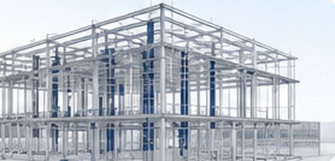
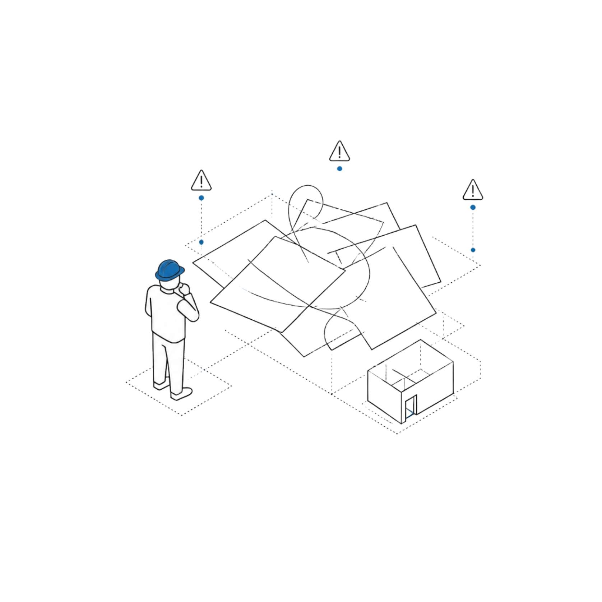
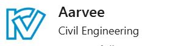
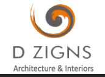

Identify construction issues digitally before they become expensive site problems.
CadenStar is a BIM company delivering BIM modeling services that connect design intent, discipline coordination, clash review and construction-ready information. Our Revit BIM services and MEP BIM services keep architecture, structure and MEP data in one coordinated model, so teams using BIM building information modeling software can resolve conflicts before they reach site.
Architect Design
Initial digital design and intent.
Clash Detection
Identify and resolve model conflicts.
Structural & MEP Coordination
Integrate mechanical, electrical and plumbing systems.
Construction-Ready
Drawings and model prepared for site use.
Better Construction Outcomes
Efficient execution with fewer issues.
One principle drives everything we do: We identify construction issues digitally before they become expensive site problems.


Save Time Faster approvals and smoother execution
Reduce Costs Minimize rework and optimize resources
Minimize Risks Detect issues early and avoid costly surprises
Deliver Quality Better coordination for high-quality outcomes
A disciplined workflow from information to execution.
Clear communication, structured modelling and coordinated documentation keep every project moving with fewer surprises. The same process supports BIM building information modeling, BIM information modeling and reliable project information from design through delivery.
Understand
Review project scope, drawings, specifications, standards and required deliverables.
Model
Develop accurate discipline models and detailing aligned with project requirements.
Coordinate
Review geometry, interfaces, clashes and constructability before documentation.
Deliver
Issue coordinated, execution-ready models, drawings, quantities and documentation.
Large-scale BIM delivery with measurable coordination outcomes.
A closer look at how CadenStar helps project teams achieve better coordination and delivery outcomes.
61-Acre Master Plan & Building Deliverables
We successfully delivered the BIM Model & BOQ for a 61-acre Master Plan, along with BOQs for the Innovation Building and Head Office. We also completed the Structural BIM Model for a University Building and a School Building.
This project further strengthened our confidence and capabilities in handling large-scale BIM coordination and quantity-related deliverables.
Every project faces coordination pressure.
The October 2026 CadenStar presentation highlights the project issues that BIM coordination is designed to address before construction begins.
The biggest cost isn't construction — it's correcting mistakes after construction begins.

One coordinated information flow, two critical project needs.
As one of the BIM companies working with builders and architects, CadenStar bridges the gap between vision and execution. Our architectural BIM services and BIM consulting services keep project information coordinated from design through delivery, using building information modeling and building information management as a shared project language.
Builders and Architects share one goal:
CadenStar bridges the gap between vision and execution .
Builders want
-
Faster approvals Get timely approvals and move ahead with confidence.
-
Predictable costs Accurate planning leads to budget clarity and fewer surprises.
-
Smooth site execution Well-coordinated models ensure seamless on-site execution.
-
Less rework Clash-free coordination reduces errors and rework on site.
-
Better coordination One model. One team. Better alignment across all stakeholders.
Architects want
-
Design intent maintained Your vision, accurately translated and preserved in every model.
-
Better visualization Realistic 3D views that help communicate and convince with clarity.
-
Fewer RFIs Clarity in documentation means fewer queries and interruptions.
-
Easier consultant coordination Better collaboration across disciplines and consultants.
That's where CadenStar comes in.
- Save Time
- Control Costs
- Reduce Risks
- Deliver Excellence
Turn construction into a collaborative, data-driven process.
The supplied presentation contrasts separate 2D workflows with coordinated BIM across architecture, structure and MEP, illustrating how building information modeling software can connect disciplines before construction.
Without BIM
- Separate 2D drawings per discipline
- Conflicts found on-site
- Frequent rework & material waste
- Manual quantity estimation
- Poor team coordination
- More RFIs & delays
- Higher construction costs
With BIM
- Integrated intelligent 3D model
- Clashes detected before construction
- Reduced rework and optimized materials
- Real-time cross-discipline collaboration
- Faster approvals and smoother execution
- Better delivery and quality
Coordination designed around project outcomes.
The presentation identifies six practical outcomes: reduce rework, save construction time, improve coordination, faster decision making, better quantity accuracy and minimize site risks.
Better Quantity Accuracy
Precise BOQs can reduce material waste and cost surprises.
Minimize Site Risks
Proactive clash resolution protects schedule and budget.
Global Collaboration
CadenStar collaborates with engineering and design teams across international project environments.
Collaborating with engineering and design partners.
Project environments and organisations we have worked with across diverse sectors.


